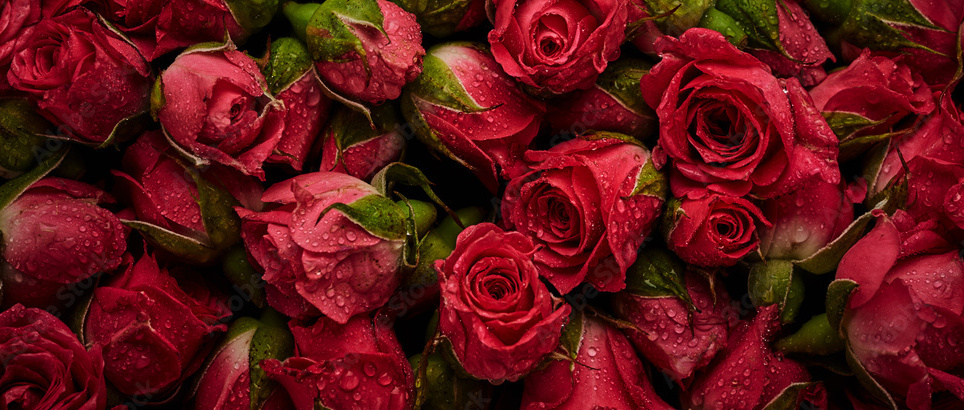

Bloom Room
Roses
Roses are one of the most iconic and versatile flowers, celebrated for their beauty,
fragrance, and symbolism. Here's a detailed look at their description and usage:
Description
1. Appearance:
Flowers: Roses typically have a rounded shape with multiple layers of petals. The petals can vary from soft and delicate to velvety and thick. The bloom size can range from small, delicate buds to large, full blossoms.
Colors: Roses come in a wide array of colors, each carrying its own meaning. Common colors include red (love), white (purity), yellow (friendship), pink (admiration), and orange (enthusiasm). There are also bi-colored and multi-colored varieties.
Leaves and Stems: The foliage of roses is usually dark green and glossy with serrated edges. Stems can be thorny or smooth, depending on the variety.
2. Varieties:
There are thousands of rose varieties, categorized into three main types:
Hybrid Teas: Known for their large, solitary blooms on long stems, ideal for cutting.
Floribundas: Produce clusters of flowers and are often used for their abundant blooms.
Climbers and Ramblers: Grow in a sprawling manner, suitable for trellises and arbors.
Usage
1. Ornamental:
Gardens: Roses are a staple in many gardens, adding beauty and structure. They can be used as standalone specimens, in mixed borders, or as ground cover.
Landscaping: Their varied colors and forms make roses suitable for creating focal points or adding elegance to outdoor spaces.
2. Symbolic:
Gifts: Roses are commonly given as gifts to convey various emotions. Red roses symbolize romantic love, while yellow roses might be given to friends.
Ceremonies: They are often used in weddings, anniversaries, and other celebrations for their symbolic meanings and visual appeal.
3. Culinary:
Rose Water: Made from rose petals, rose water is used in Middle Eastern and Indian cuisine to flavor sweets and desserts.
Rose Petals: Edible rose petals can be used as a garnish or in salads, adding a hint of flavor and color.
4. Medicinal and Aromatherapy:
Essential Oils: Rose essential oil is used in aromatherapy for its soothing properties and to relieve stress.
Herbal Remedies: Rose tea is sometimes used for its potential benefits in calming the digestive system and improving skin health.
5. Crafting:
Potpourri: Dried rose petals are commonly used in potpourri for their fragrance and aesthetic appeal.
Decorative Arts: Roses are featured in various crafts, including floral arrangements, wreaths, and handmade cards.
Roses' enduring popularity is due to their versatility and the wide range of forms and colors available, making them suitable for nearly every occasion and purpose.
